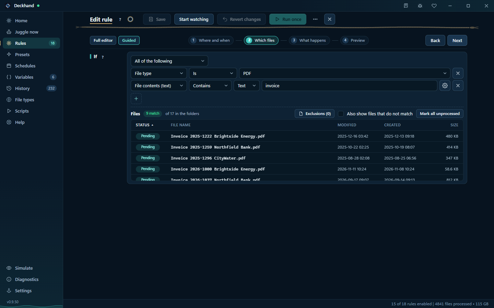
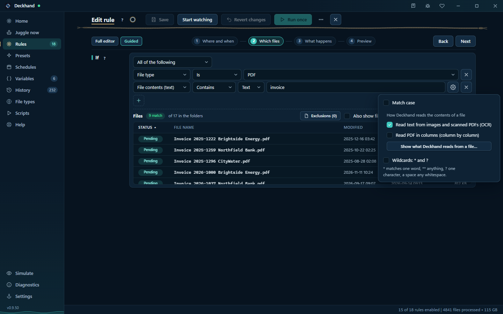
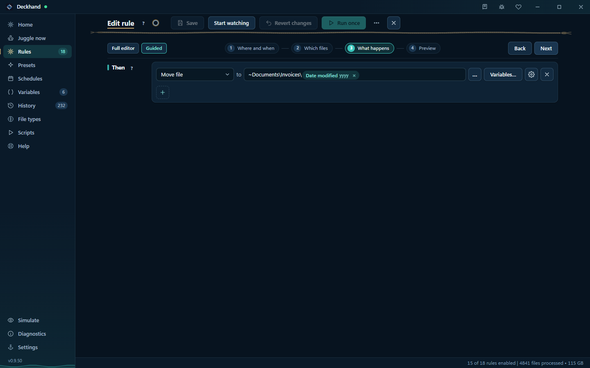
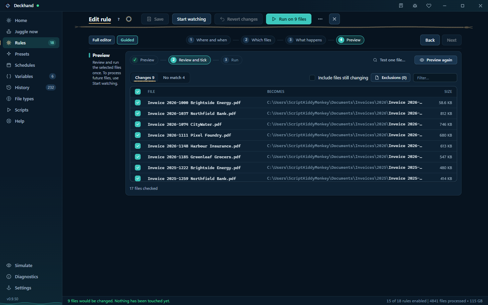
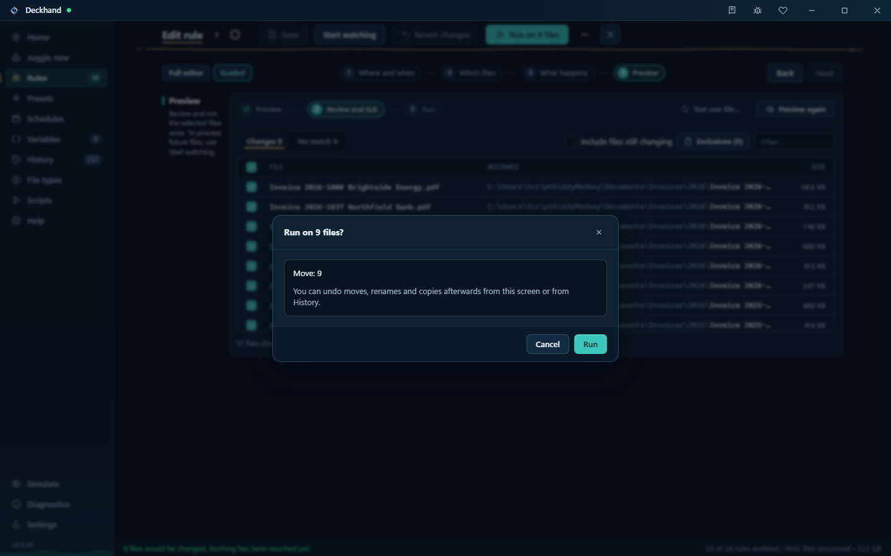
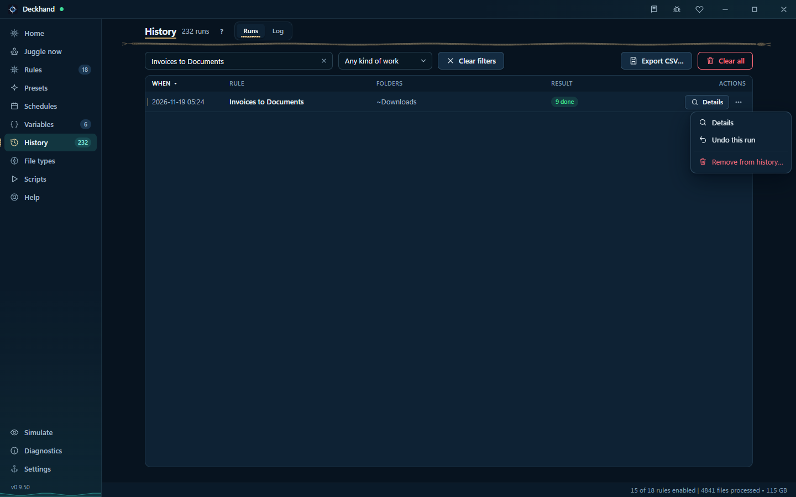

Your first rule
Move PDF invoices from Downloads into folders by year, with preview first and Undo ready.
This walk-through builds one rule, Invoices to Documents: PDF invoices that land in Downloads move into Documents\Invoices, one folder per year. You preview it first, run it once, and undo it afterwards. Every screenshot on this page shows that same rule, in order.
1. Open the rule editor
- Open Rules and add a new rule. The Guided view walks you through four steps: Where and when, Which files, What happens and Preview.
- Type the rule's name in Description. Here it is Invoices to Documents.
Button and field names can differ slightly between releases. If you prefer to see everything at once, switch to Full editor. See Guided and Full editor.
2. Choose the folder to watch
In Watch, enter ~Downloads. The ~ form is a portable path that follows whichever Windows user is signed in. Other aliases are ~Documents, ~Desktop, ~Pictures, ~Music and ~Videos. Leave Include subfolders off.
The first screenshot shows step 1 with the name and the watch folder filled in. The rule is not switched on yet, so the toolbar offers Start watching.

3. Say which files (If)
Press Next. In If, keep the group on All of the following and add two rows:
- File type Is PDF.
- File contents (text) Contains
invoice.
The line under the rows reports how many files in the folder match right now (here 9 of 17) and lists them, as the next screenshot shows.


File contents reads the text inside PDFs, Word, Excel and PowerPoint files and plain text files. If some of your invoices are scans, open the gear at the end of the contents row, shown in the next screenshot. Pictures and scanned PDFs are read with OCR when Read text from images and scanned PDFs (OCR) is ticked, which is the default. OCR can misread, so Deckhand never deletes, recycles or overwrites a file because of text it recognised unless you approve that file. See the Conditions reference.


4. Say what happens (Then)
Press Next and add a Move file action with this destination:
~Documents\Invoices\{modified:yyyy}{modified:yyyy} is a variable. It inserts the year the file was last modified, so each year gets its own folder. In the next screenshot it is the Date modified yyyy chip after ~Documents\Invoices\. See Variables and transforms.
Leave If the file already exists (in the gear at the end of the row) on its default, Rename the new file. A clash then produces name_2.pdf instead of overwriting anything.


5. Preview
Press Next, then Preview. Deckhand shows what would happen and changes nothing, as in the next screenshot.
- Changes lists files that would move, with the folder each one Becomes. Here 9 invoices go to
Invoices\2026orInvoices\2025, depending on the year each was modified. - No match lists files the rule ignored (4 here, for example a PDF that is not an invoice).
- Problems lists files that would fail, with the reason.
Untick any file you want left alone for this run. To try one file against the conditions, use Test one file.... You can also use Simulate. Read more in Preview, Run and Undo.


6. Run, then undo if needed
Press Run on 9 files in the toolbar. Deckhand asks you to confirm and says what it will do (here: Move: 9). It does exactly what you previewed.


Open History. The run is listed with every file and step. Open the ... menu of the run and choose Undo this run to put the files back, or open the run's details to undo a single file. The next screenshot shows History filtered to this run, with that menu open.


Deckhand asks once more before it undoes anything.

7. Switch it on
When you are happy, save the rule and press Start watching. Deckhand handles the files already in the watch folder, then keeps watching. A file is only moved once it has stopped changing, so a download in progress is left alone. See Rules, folders and watching.
Next
- Conditions and exclusions to keep files out of a rule.
- Actions and conflicts for every action and what happens when a name is taken.